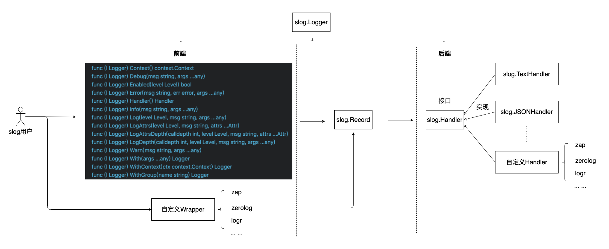

公式の構造化 Logger (になるかもしれない) slog パッケージ
今日の「第4回『Go言語による分散サービス』オンライン読書会」で構造化ログについて話題になったのだが（ちなみに『Go言語による分散サービス』のサンプルコードでは構造化ロガーとして zap を利用している），その中で公式の構造化 logger がプロポーザルとして上がってるという話を聞く。
どうもこれのことらしい。
- proposal: log/slog: structured, leveled logging · Issue #56345 · golang/go · GitHub
- Proposal: Structured Logging
この slog パッケージについて解説記事も見つけたので，これも参考にしながら少し遊んでみようと思う。
2022年10月末時点で，このパッケージについては
In late August 2022, Jonathan Amsterdam of the Go team initiated a discussion with the community about adding structured, log-level support for logging packages to the Go standard library, and formed a consensus proposal.
Jonathan Amsterdam has named the structured logging package slog and plans to put it under
log/slog. He also gave the initial implementation of slog undergolang.org/x/exp, and the Proposal is officially in review these days. It is not known when it will be officially implemented in the official version of Go.
という感じらしい。 実際に design doc が公開されレビューが行われているということなら多少は期待してもいいかもしれない。 公式になるといいな。
試しに簡単なコードを書いてみよう。
package main
import (
"os"
"golang.org/x/exp/slog"
)
func main() {
slog.SetDefault(slog.New(slog.NewTextHandler(os.Stderr)))
slog.Info("hello world")
}
これを実行すると
$ go run sample1.go
time=2022-11-12T19:00:27.704+09:00 level=INFO msg="hello world"
という感じに KEY=VALUE スタイルのログを出力する。
またバックエンド側のハンドラを
package main
import (
"os"
"golang.org/x/exp/slog"
)
func main() {
slog.SetDefault(slog.New(slog.NewJSONHandler(os.Stderr)))
slog.Info("hello world")
}
と差し替えることで
$ go run sample2.go
{"time":"2022-11-12T19:45:51.816529605+09:00","level":"INFO","msg":"hello world"}
と JSON スタイルの出力に切り替えることもできる。
この出力ハンドラは自作することもでき，たとえば zap や zerolog といったサードパーティの logger に接続することもできるらしい。

もう少し遊んでみよう。
error 値を出力するコードを書いてみる。
package main
import (
"context"
"os"
"github.com/goark/errs"
"golang.org/x/exp/slog"
)
func checkFileOpen(path string) error {
file, err := os.Open(path)
if err != nil {
return errs.Wrap(
err,
errs.WithContext("path", path),
)
}
defer file.Close()
return nil
}
func main() {
logger := slog.New(slog.NewJSONHandler(os.Stderr)).WithContext(context.TODO())
logger.Enabled(slog.DebugLevel)
if err := checkFileOpen("not-exist.txt"); err != nil {
logger.Error("open error", err)
} else {
logger.Info("no error")
}
}
これを実行すると
$ go run sample3.go
{"time":"2022-11-12T20:32:38.775783665+09:00","level":"ERROR","msg":"open error","err":"open not-exist.txt: no such file or directory"}
となる。 まぁ，予想通り。
でも，拙作の errs パッケージは errs.Error.MarshalJSON() メソッドを持っているので JSON 形式で出力して欲しい。
苦肉の策で
logger.Error("open error", err)
を
logger.Error("open error", err, slog.Any("info", err))
としてみたが，結果は
$ go run sample4.go
{"time":"2022-11-12T20:54:04.358245853+09:00","level":"ERROR","msg":"open error","info":"open not-exist.txt: no such file or directory","err":"open not-exist.txt: no such file or directory"}
となる。
ソースコードを見ると fmt.Sprint(v.any) なる記述が見れるので error 型は問答無用で Error() メソッドが出力する文字列に変換されてしまうようだ。
ふむむー。
ひょっとしたら slog.JSONHandler を参考に独自のハンドラを組めばどうにかなるかもしれんが，今回は止めておこう。
ホンマに公式になるかどうか分からんし（笑）
ともかく，公式の構造化 logger が登場すればログ周りのシーンはかなり変わるだろう。 楽しみなことである。
ブックマーク
- Go のエラーハンドリング
- Go公式の構造化ロガー（として提案されている）slogを触ってみたメモ
- GitHub - chanchal1987/zaphandler: zaphandler will help to create slog handler using zap logger : slog 用 zap 出力ハンドラ
- Playing With Slog, the Proposed Structured Logging Package for the Go Standard Library
- Goの新しい構造化ロガーを体験しよう | gihyo.jp
- 🪵 Go1.21 log/slogパッケージ超入門
参考図書

- Go言語による分散サービス ―信頼性、拡張性、保守性の高いシステムの構築
- Travis Jeffery (著), 柴田 芳樹 (翻訳)
- オライリージャパン 2022-08-03
- 単行本（ソフトカバー）
- 4873119979 (ASIN), 9784873119977 (EAN), 4873119979 (ISBN)
- 評価

- プログラミング言語Go (ADDISON-WESLEY PROFESSIONAL COMPUTING SERIES)
- Alan A.A. Donovan (著), Brian W. Kernighan (著), 柴田 芳樹 (翻訳)
- 丸善出版 2016-06-20
- 単行本（ソフトカバー）
- 4621300253 (ASIN), 9784621300251 (EAN), 4621300253 (ISBN)
- 評価
著者のひとりは（あの「バイブル」とも呼ばれる）通称 “K&R” の K のほうである。この本は Go 言語の教科書と言ってもいいだろう。と思ったら絶版状態らしい（2025-01 現在）。復刊を望む！

- 初めてのGo言語 ―他言語プログラマーのためのイディオマティックGo実践ガイド
- Jon Bodner (著), 武舎 広幸 (翻訳)
- オライリージャパン 2022-09-26
- 単行本（ソフトカバー）
- 4814400047 (ASIN), 9784814400041 (EAN), 4814400047 (ISBN)
- 評価
2021年に出た “Learning Go” の邦訳版。私は版元で PDF 版を購入。 Go 特有の語法（idiom）を切り口として Go の機能やパッケージを解説している。 Go 1.19 対応。